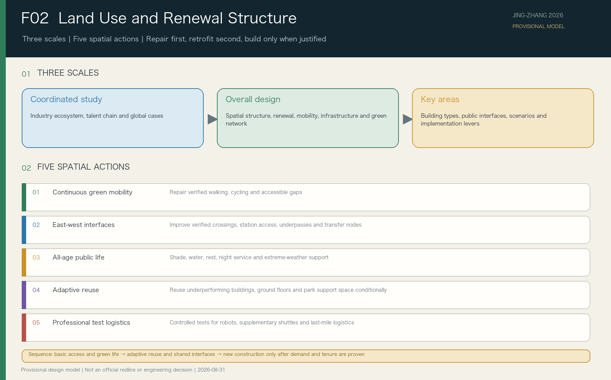
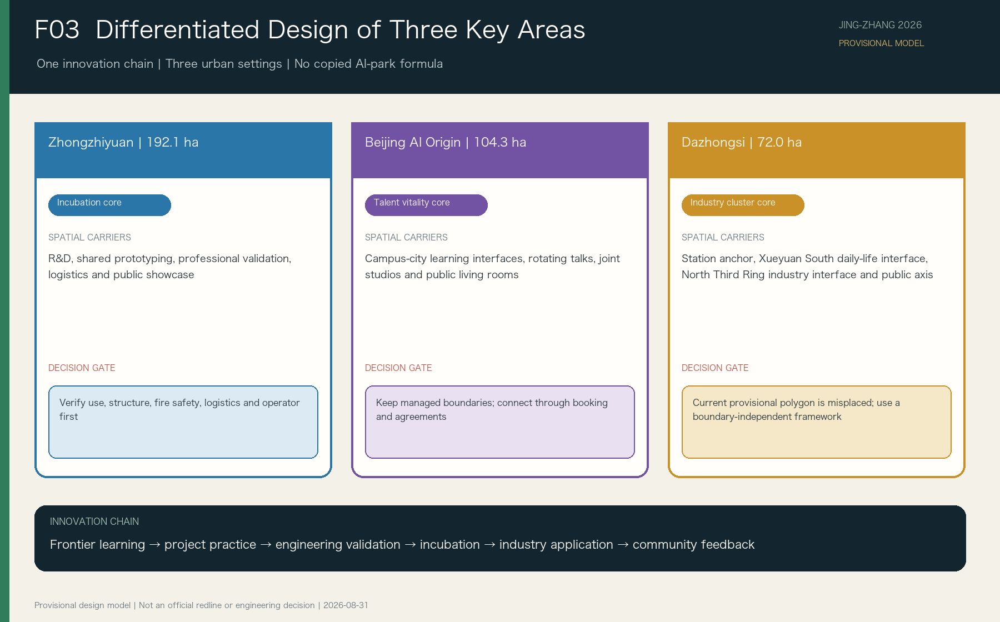

Zhongzhiyuan
192.1 ha | Innovation Incubation CoreEngineering development, shared prototyping, professional validation, and pre-incubation.
The Jing-Zhang green public spine supports everyday life and an open civic interface. Three key areas support talent learning, innovation incubation, and industry adoption. Spatial, innovation-chain, daily-service, and resilience-resource connections make AI development improve everyday life.
Jing-Zhang is a green public platform, not a single channel through which every project must pass.

Repair green mobility, accessibility, and basic services first; adapt existing space second; consider new construction only when evidence supports it.

The three areas organize learning-research-incubation-testing-adoption-feedback without reproducing three generic AI parks.
Engineering development, shared prototyping, professional validation, and pre-incubation.
Rotating company lectures, cross-campus briefs, open studios, and everyday innovation exchange.
Product integration, market validation, enterprise services, and mature application.

Walking, cycling, accessibility, rail, and ordinary transit come first. Autonomous vehicles only supplement specific north-south needs.

AI helps resources become discoverable, matchable, and trackable. Accountable organizations still make high-risk decisions.